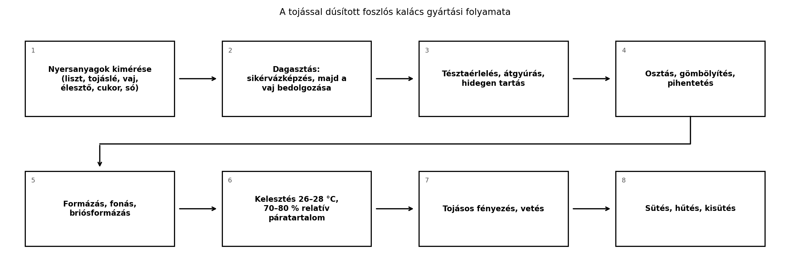

Húsvét előtt a tanpékségben foszlós kalácsot és kerek brióst kell készíteni. A vevő a kalácsot akkor fogadja el, ha a bélzete sárgás, lágy, szálasan foszlós, a héja vékony, és a fonott forma nem szakad szét. Ha a tésztába a tojást, vajat és cukrot rossz sorrendben dolgozzák be, a termék tömör, morzsálódó vagy zsírosan nehéz lesz. Ebben az alfejezetben megtanulod, hogyan kell tojással dúsított tésztát készíteni, és miért lesz a briós, illetve a foszlós kalács bélzete jellegzetesen foszlós.
A tojással dúsított tészta gyártása egy olyan lánc, amelyben a tészta hőmérsékletét, a dagasztás sorrendjét és a kelesztés/sütés paramétereit egyszerre kell kézben tartani:

A folyamat minden lépése előtt azt kérdezd: „Mi romlik el, ha itt nem tartom be a sorrendet vagy a hőmérsékletet?” A legfontosabb a dagasztás sorrendje: előbb a sikérváznak kell kialakulnia, utána jöhet a vaj, különben a kalács nem foszlós.
Definíció. Finom pékáru: a sütőipari termékek azon csoportja, amelyben a liszthez képest viszonylag sok tojást, zsiradékot, cukrot, tejterméket és ízesítőt használnak. A bélzet lágy, dúsított, a termék kisebb tömegű, mint egy kenyér. A finom pékáruk közé tartozik a briós, a foszlós kalács, a kuglóf, az omlós és leveles tészta. (ellenőrizendő: a Magyar Élelmiszerkönyv sütőipari termékekre vonatkozó csoportosítása és a hatályos képzési követelmény)
Definíció. Tojással dúsított tészta: olyan édes vagy semleges tészta, amelyben a tojás (tojáslé vagy tojáspor) mennyisége a lisztre vetítve jellemzően 10–40 m/m% között van, és emellett a zsiradék (vaj vagy sütőmargarin) aránya is magas, gyakran 15–35%. A tojás a tésztát dúsítja, színezi, a bélzetet finom pórusúvá és rugalmassá teszi. A tojás-egyenérték számítását a Tojás és tojástermékek alfejezetből ismered.
Definíció. Foszlós kalács: puha, fonott vagy kerek, tojással, vajjal és tejjel dúsított édes kalács. A „foszlós” jelleg azt jelenti, hogy a héj vékony, a bélzet sárgás, szálakra válik, de nem morzsálódik; a termék széthúzva lágy, vékony rétegeket alkot.
Definíció. Briós tészta: francia jellegű, erősen vajazott, tojással dúsított lágy tészta. A briós tésztában a vaj aránya a liszthez viszonyítva 30–60% is lehet, ezért a tészta lágy, hűvös, és hideg érlelést igényel. A briós formája kerek gömbfejű, hullámos falú formában sült, vagy kicsi, golyóból formázott. (ellenőrizendő: a termékleírás az Élelmiszerkönyvben vagy a gyártmánylapon)
Szabály. A tojás és a zsiradék hatása a bélzetre:
Összefüggés. Tésztakitermelés tojásos tésztánál: a könyv definíciója szerint . A tojásos tésztánál a tojáslé és a tej is folyadék, ezért a TA-t a folyadékok víztartalmával is szokás közelíteni; ezt folyadékegyenértékes TA-nak nevezzük:
(ellenőrizendő: üzemi gyakorlat, a víztartalmi arányok tanulási közelítések). A tésztahozam (az összes összetevő tömege 100 kg lisztre) ettől külön mennyiség, lásd a Tésztahozam, termékhozam, kihozatal és veszteségek alfejezetet.
Figyelem. Hőmérséklet. A tojással dúsított tészta kényes a hőre: a vaj 28–30 °C fölött olvadni kezd, a tészta elveszíti formáját, „zsíros” lesz. Ezért a dagasztás végén a tésztahőmérséklet cél 24–26 °C, a kelesztés pedig 26–28 °C között van (briósnál inkább 24–27 °C; tanulási példa, ellenőrizendő: technológiai lap). A dagasztóvíz hőmérsékletét a Tésztahőmérséklet és dagasztóvíz számítása szerint kell számolni, figyelembe véve a tojás és a vaj hőmérsékletét is.
HACCP. A nyers tojás a Salmonella szempontjából kritikus alapanyag. A nyers tojást hűtve tároljuk, feltörés után a héjas tojás maradékát azonnal elkülönítve kezeljük, a tésztát pedig olyan maghőmérsékletre kell sütni, hogy a tojásos bélzet átsüljön. A kenéshez használt tojást ugyanúgy kell kezelni, mint a tésztához valót. A sütési maghőmérsékleti cél legalább 90 °C a bélzetben, de a pontos értéket a HACCP-terv rögzíti. (ellenőrizendő: a pékség HACCP-terve és a hatósági útmutató)
A fejes briós formázását (6. lépés) és a tojásozást (8. lépés) az alábbi képsor mutatja; az utolsó kocka a kész termék metszete és a leggyakoribb formázási hiba.
A fej csak akkor marad egyenesen, ha a mélyedés elég mély és a fej csapja beleül (6. kocka); sekély mélyedésnél vagy csap nélküli fejnél a fej sütés közben elferdül, leesik. A tojás ne folyjon az illesztésbe (5. kocka), mert összeragasztja a két részt. A HTML-kiadásban a képsor lépésenként lejátszható.
A kakaós foszlós kalácsot kétféleképpen lehet készíteni:
A kakaópor (különösen a nagyobb adag) vízkötése és a kakaó egyes összetevői lassíthatják az élesztőt, ezért a kakaó mennyiségét ne emeljük túl; a holland (lúgozott) kakaó a tészta pH-ját kissé emeli. A kakaós-vajas massza a vaj miatt tejet tartalmaz; dió hozzáadásakor a diófélék is jelölendők. (ellenőrizendő: a gyártmánylap)
Egy foszlós kalács technológiai lapja a lisztre vetítve: cukor 15%, tojáslé 30%, víz 20%, élesztő 6%, só 1,2%, vaj 25%, tejpor 4%. Mennyi anyagot kell kimérni 10 kg liszthez?
Megoldás.
Minden anyag tömege: .
Ellenőrzés: a tészta tömege . A lisztre vetített százalékok összege . A tömeg és a százalék egyezik. ∎
A recept 3,00 kg tojáslevet ír elő. A tojáslé szárazanyag-tartalma 24%, a tojásporé 96%. Mennyi tojásporral és mennyi pótló vízzel lehet kiváltani a tojáslevet?
Megoldás.
A tojáspor tömege:
A pótló víz:
Ellenőrzés: a 0,75 kg tojáspor + 2,25 kg víz összesen 3,00 kg tojáslénak felel meg, és a szárazanyag-tartalom is egyezik: ; . ∎
500 g kész tömegű fonott foszlós kalácsot sütünk. A sütési veszteség 6%, a hűlési veszteség 3%. Mekkora a feladási tömeg, és mennyi tésztát kell kimérni 20 darabhoz?
Megoldás.
Összes veszteség:
Feladási tömeg:
Tészta szükséglet 20 darabhoz:
Ellenőrzés: 20 db késztermék tömege . A veszteség , ami a tészta 9,1%-a, a kerekítés miatt közel 9%. ∎
Előírás. A tojás a 1169/2011/EU rendelet szerint allergén összetevő, ezért a tojást és a tojásterméket a fogyasztói tájékoztatásban kiemelten kell jelölni. A tojástermékekre a 853/2004/EK rendelet higiéniai követelményei vonatkoznak; a tojás felhasználásakor a nyers tésztát nem szabad hosszan meleg helyen tartani, és a sütésnek el kell érnie a bélzet hőkezeléséhez szükséges maghőmérsékletet. A pontos sütési hőmérséklet és idő a pékség HACCP-tervén alapul. (ellenőrizendő: az uniós rendeletek aktuális szövege, a Magyar Élelmiszerkönyv sütőipari termékekre vonatkozó előírása, a NÉBIH útmutatója)
Egy tanuló foszlós kalácsot dagasztott, és a vajat a liszttel együtt, a dagasztás elején tette bele. A tészta 28 °C fölé melegedett, a vaj megolvadt, a tészta fényes, ragadós lett. A kalács a sütőben kicsit megkelt, de a bélzete tömör, nem foszlós, a héja vastag lett. A hiba oka az volt, hogy a vaj már a sikérvázképződés előtt bevonta a lisztet, és gátolta a sikér kialakulását. Ezenkívül a tésztahőmérséklet túl magas volt, a vaj szétolvadt. A helyes gyakorlat: előbb a sikérvázat kell kialakítani, és a vajat hidegen, csak a dagasztás második felében fokozatosan bedolgozni, majd ellenőrizni a tésztahőmérsékletet.
Cél: tojással dúsított foszlós kalács készítése a technológiai lap szerint, egy kisebb tételben, kézi vagy gépi dagasztással.
Eszközök és anyagok: spirális dagasztógép (vagy kézi dagasztó), mérleg, kelesztőkamra, sütő, sütőlemez, rács, kelesztőedény, konyhai hőmérő, kés vagy tésztakaparó, ecset a tojásozáshoz. Anyagok: finom liszt, friss élesztő, cukor, só, tejpor, tojáslé, vaj, víz.
Higiénia. Tiszta munkaruha, hajháló, ékszer nélkül. Kézmosás az anyagok fogása előtt. A tojáshéjból származó cseppeket azonnal takarítsd, és a tojásos eszközöket ne használd nyers tésztán kívül más nyersanyaghoz. A vajat és a tojáslevet hűtve tárold, a tojáslevet szobahőmérsékletre temperáld, de 30 percnél tovább ne álljon meleg helyen. (ellenőrizendő: az üzemi jó higiéniai gyakorlat)
Gépbiztonság. A dagasztógépet csak betanítás után, felügyelettel kezeld. A védőburkolatot ne akaszd ki; a dagasztóteknőben a tésztát a gép leállítása és a forgó rész megállása után ellenőrizd. A sütőlemez kivételekor hőálló kesztyűt használj. A kemence gőzét ne engedd az arcodba.
Lépések:
Termék: Foszlós kalács (fonott, édes, tojással dúsított) Termékcsoport: finom pékáru, kalácsfélék Darabtömeg (késztömeg): 500 g Darabszám: 36 db (20,12 kg tészta ÷ 0,550 kg feladási tömeg = 36,6, lefelé kerekítve; a maradék kb. 0,3 kg)
| Nyersanyag | Lisztre vetített % | Mennyiség (kg) | Megjegyzés |
|---|---|---|---|
| Finom búzaliszt (BL 55) | 100% | 10,000 | szitálva, hideg |
| Cukor | 15% | 1,500 | kristály |
| Tojáslé | 30% | 3,000 | hűtve, szobahőmérsékletre temperálva |
| Víz | 20% | 2,000 | dagasztóvíz, hőmérséklet szerint |
| Friss élesztő | 6% | 0,600 | vízben elkeverve |
| Só | 1,2% | 0,120 | |
| Vaj | 25% | 2,500 | hideg, kockázva |
| Tejpor | 4% | 0,400 | opcionális |
| Összeg (tésztatömeg) | 201,2% | 20,120 | a tészta tömege 10 kg liszthez |
Műveleti paraméterek (tanulási példa, ellenőrizendő üzemi technológiai lap):
Allergének: búzaliszt (gluténtartalmú gabona), tojás, tej (vaj, tejpor). A sütőmargarin használata esetén szóját is tartalmazhat. Keresztszennyeződés: a lisztpor és a tojásos eszközök közösek; a glutén-, tojás- vagy tejmentes termékeket külön gyártósoron, külön eszközökkel kell készíteni. (ellenőrizendő: a pékség allergénkezelési terve)
HACCP- és minőségi pontok: nyers tojás hűtőtárolása, a feltört tojás azonnali felhasználása, sütési maghőmérséklet, késztermék tömegellenőrzés, idegen anyag elkerülése (héjdarab), a nyers tészta és a kenőtojás elkülönítése. A kritikus pontok konkrét határait a pékség HACCP-terve rögzíti. (ellenőrizendő: HACCP-terv)
Érzékszervi jellemzők. A kész foszlós kalács héja egyenletes, aranybarna, vékony; a fonat ágai szabályosak, nem szakadtak. A bélzet sárgás, egyenletes, lágy, szálasan foszlós, nem morzsálódó. Az illata édeskés, vajas, tojásos; az íze harmonikus, nem sótlan, nem túl édes.
Mért jellemzők. Tömeg, térfogat, fajlagos térfogat, nedvességtartalom. A tömegtűrés a késztermékre a gyártmánylap szerint; a 36 db 500 g-os kalács össztömege a tételben 18,0 kg legyen. A bélzet nedvességtartalma jellemzően 25–35%, de ez a termékre és az Élelmiszerkönyvre épül. (ellenőrizendő: a gyártmánylap és a Magyar Élelmiszerkönyv vonatkozó előírása)
Gyakori eltérés: a bélzet tömör, nem foszlós; a héj túl vastag; a fonat szétnyílt; a termék belül nyers. Mindegyik tünet okát a Tipikus hibák részben elemezzük.
A válaszokat a Megoldások elején találod.
1. feladat (A). Írd le, mit jelent a „tojással dúsított tészta” kifejezés, és nevezd meg a tojás három technológiai hatását!
2. feladat (A). Egy recept 12 kg liszthez 18% tojáslevet ír elő. Mennyi tojáslevet kell kimérni? Ha a tojáslé 24% szárazanyagú, és teljes tojásporral (96% szárazanyag) váltod ki, mennyi port és vizet kell használni?
3. feladat (B). A következő foszlós kalács recept lisztre vetítve: liszt 100%, cukor 14%, vaj 22%, tojáslé 28%, tej 12%, élesztő 5%, só 1%. Számítsd ki az anyagmennyiségeket 15 kg liszthez, ellenőrizd a tészta tömegét, és határozd meg a folyadékegyenértékes TA-t és a tésztahozamot!
4. feladat (B). 750 g kész tömegű kerek brióst készítesz. A sütési veszteség 7%, a hűlési veszteség 2%. Hány darab süthető abból a tésztából, amit a 3. feladatban kaptál? Vezesd le a feladási tömeget, és ellenőrizd a mennyiséget!
5. feladat (C). Egy tanuló a foszlós kalácsot 35 °C-os kelesztőkamrában kelesztette, és a tészta szétterült, a héj olajos lett, a fonat összeesett. Elemezd a hibát: mi a legvalószínűbb ok, mit kellett volna ellenőrizni, és hogyan lehet megelőzni?
6. feladat (D). A gyakorlati útmutató alapján tervezd meg egy foszlós kalács gyártási tételének HACCP-ellenőrzési sorát: nevezd meg a két legfontosabb kritikus pontot, a lehetséges veszélyt, a határértéket (tanulási példaként), a monitoring módját, és a helyesbítő intézkedést!
1. feladat. A tojással dúsított tészta olyan tészta, amelyben a tojás (tojáslé vagy por) mennyisége a lisztre vetítve jellemzően 10–40%, és sok zsiradékot, cukrot, tejterméket tartalmaz. A tojás hatásai: (1) fehérjéje koagulál, stabilizálja a bélzetet; (2) sárgája lecitinje emulgeál, segíti a zsiradék elkeveredését; (3) színt és ízt ad. ∎
2. feladat.
Tojáslé mennyisége: .
Tojáspor mennyisége: .
Pótló víz: .
Ellenőrzés: a por + víz szárazanyag-tartalma ; a tojáslé szárazanyaga . ∎
3. feladat.
15 kg liszthez:
Tészta tömege: .
Folyadékegyenértékes TA (nincs külön víz): . A tésztahozam: kg/100 kg liszt.
Ellenőrzés: a százalékok összege ; . ∎
4. feladat.
Összes veszteség: . Feladási tömeg: .
A 3. feladat tésztatömege 27,30 kg. Darabszám: , tehát 33 darab süthető. Ellenőrzés: , a maradék tészta . ∎
5. feladat. A legvalószínűbb ok: a kelesztőkamra hőmérséklete 35 °C volt, ami meghaladja a 26–28 °C célértéket. A magas hőmérsékleten a vaj kiolvadt, a tészta szétterült, a felülete zsíros lett, a fonat összeesett. Ellenőrizni kellett volna a kamra hőmérőjét, a tészta hőmérsékletét és az időt. Megelőzés: a kelesztőkamrát pontosan 26–28 °C-ra állítsuk, a páratartalmat 70–80%-ra, és ne hagyjuk túl kelni a tésztát. ∎
6. feladat lehetséges megoldása. Két kritikus pont: (1) nyers tojás hűtőtárolása és felhasználása – veszély: Salmonella elszaporodás; határérték: max. 4 °C (ellenőrizendő), felhasználás azonnal; monitoring: hűtőhőmérő naponta, felhasználási napló; helyesbítés: a tétel azonnali elkülönítése és visszatartása; a tojás sorsáról (selejtezés vagy – ha a HACCP-terv megengedi – azonnali hőkezelés a terv szerint) a felelős dönt; a mért értéket és a döntést dokumentálni kell; a hűtőt javíttatni (ellenőrizendő: a pékség HACCP-terve). Az „azonnali felhasználás” nem helyesbítő tevékenység. (2) sütési maghőmérséklet – veszély: a kórokozó túlélése; határ: a HACCP-tervben rögzített bélzet-hőmérséklet (példa: ≥ 90 °C, ellenőrizendő); monitoring: minden sütési tételből maghőmérővel; helyesbítés: alacsony hőmérséklet esetén visszasütés vagy selejt. ∎
A tojással dúsított tészta a finom pékáruk alapja: a tojás fehérjéje koagulál, a sárgája lecitinje emulgeál, a vaj lágyítja a sikért, a cukor és a tej színt, ízt és puhaságot ad. A foszlós kalács jellegzetessége a vékony héj és a sárgás, szálakra foszló bélzet; a briós tészta vajban még gazdagabb, hideg érlelést igényel. A technológia kulcsa a dagasztás sorrendje: először a sikérvázat kell kialakítani, majd a vajat fokozatosan bedolgozni. A tésztahőmérséklet 24–26 °C, a kelesztés 26–28 °C és 70–80% relatív páratartalom, a sütés 190–210 °C, a bélzet maghőmérsékletét a HACCP-terv szerint kell ellenőrizni. A tojás, tej, glutén allergének; a nyers tojás hűtve tárolandó, a kenőtojás is frissen kezelendő. Továbbvitt eredmény: a tojással dúsított tészta dagasztási sorrendje, hőmérsékleti céljai és a vajbedolgozás elve a Kuglófok és a kovásszal készült kevert kuglóf alfejezetben térnek vissza, ahol a dúsított, formában sült kevert tésztákat tárgyaljuk.